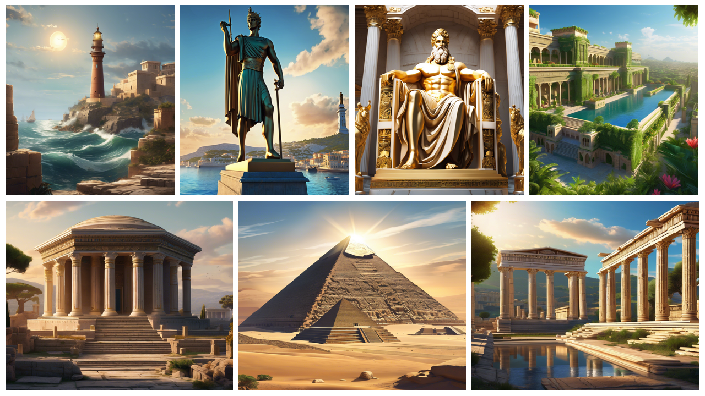

Autor: Filipe Rogério Dos Reis Matias
De acordo com estudiosos, elas são o auge da engenharia, da arquitetura e da beleza artística quando se fala em Antiguidade. Cada uma das Sete Maravilhas do Mundo Antigo pode ser considerada individualmente um feito surpreendente da imaginação e da engenharia humana. Juntas, formam um guia de monumentos da Antiguidade que vai além do tempo e nos conta um pouco mais sobre a história, a cultura e a religião dos povos antigos. São elas:;
Mas, afinal, o que constitui uma “maravilha”?
Os viajantes gregos exploravam outras civilizações mediterrâneas, como os egípcios, persas e babilônios. Após as visitas, eles compilavam guias com as atrações mais notáveis para servir de recomendação a outras pessoas. Eles as chamavam de theamata (“vistas”), que logo evoluiu para algo mais grandioso, thaumata, que significa ‘maravilhas’.